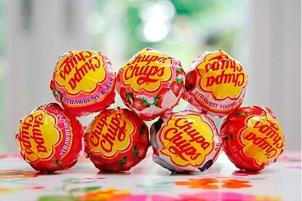

Цікаві факти про Чупа-чупс
Чупа-чупс — льодяники на паличці, які пробували мільйони дітей по всьому світу. Однак колись вони були лише експериментом одного підприємця з
Іспанії. Чим його творіння зобов’язане своїм успіхом? Пропонуємо цікаві факти про чупа-чупс, які розкриють секрет популярності льодяників.
1. Ідея виробництва льодяників на паличці належить іспанцеві Енріке Бернат. Він став засновником компанії Chupa Chups, коли вирішив всерйоз
зайнятися виготовленням і продажем нового кондитерського виробу.
2. Народна легенда розповідає, що одного разу підприємливий іспанець зауважив матір, лаючу свою дитину за забруднення рук солодощами. В той момент Енріке Бернат зрозумів, що виробники не замислювалися про потреби своїх юних покупців.
3. Ідея льодяників на паличці придбала популярність не просто завдяки своїй практичності. Багато в чому цьому сприяв і правильний маркетинг. Так, солодощі
почали продавати на рівні очей дітей, які і вмовляли батьків купити їм льодяник. Крім того, з цього моменту цукерки виставлялися біля каси, а не позаду
прилавка.
4. Спочатку льодяники називалися по-іншому — «Гол», але потім їх довелося перейменувати. А причиною цього були самі діти, які масово почали питати в магазинах
чупа-чупс. Адже саме ці слова вони запам’ятали з рекламної пісеньки «Chupa, chupa, chupa сhups».
5. Нова назва льодяників відбувалася від іспанського дієслова
chupar, що означає «смоктати». Першим слоганом товару став вираз «Він круглий і довгий».
6. Знаменитий логотип чупа-чупс створив сюрреаліст Сальвадор Далі.
У 1961 року Енріке Бернат попросив художника зобразити щось цікаве. І незабаром він отримав очікуване.
7. Сьогодні чупа-чупс буває більше 20 смаків. Це поширені
в кондитерській справі банан, ваніль, вишня, яблуко, полуниця і більш рідкісні кавун, шоколад, виноград, лісові ягоди, а також інші. Подібна різноманітність
дозволяє догодити безлічі покупців.